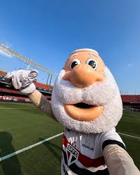
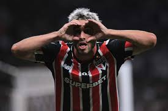
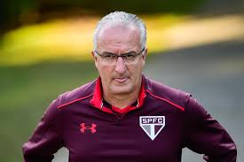
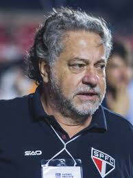
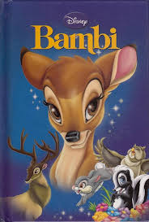

Mascote do SPFC apronta mais uma
Depois de mais um treino dos jogadores o mascote do time manda uma mensagem de incentivo ao time e chama a torcida para o proximo confronto com o Corinthians.

Calleri faz três gols em goleada contra Conrinthians
No último domingo o SPFC deu uma goleada no Corinthians ganhando de 5 a 1.

Dorival ícone ou vira-casaca?
Pesquisa realizda com mil torcedores do time releva qual a opnião sobre Dorival Junior.

Prefeitura de São Paulo planeja construir estátua de 10 metros em frente ao MASP em homenagem a Rogério Ceni.
Lenda do SPFC e goleiro com mais gols na história pode ganhar estátua em sua homenagem.

Julio Casares é investigado por suspeita de usar cartão do time para pagar viajens e comprar relógios.
O ex-presidente do clube afirma que tudo não passa de um mal entendido.

Bambi? Descubra de onde vem esse apeldio pejorativo.
Saiba mais sobre a extensa pesquisa realizda e a descuberta chocante.
Saiba mais
São Paulo acaba com parceria com Bis e assina novo patrocinio com Mercado Boi Gordo.
A partir de agora o estádio se chamará Morumbisteca.
.png)
São Paulo é coroado maior time das amériacas, desmancando Palmeiras e Flamengo.
O presidente da FIFA, Giovanni Infantino, em um evento da FIFA fez o anúncio que o São Paulo FC é o time com mais titúlos relevantes.